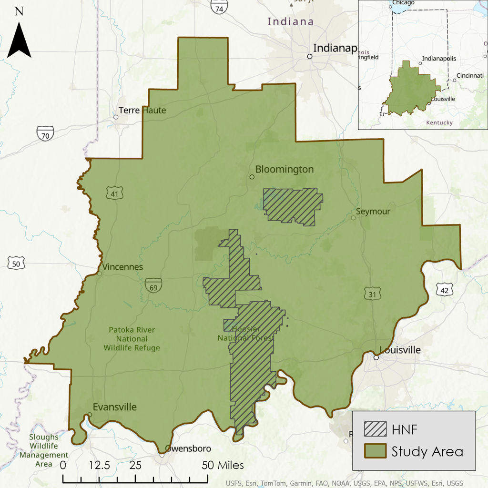
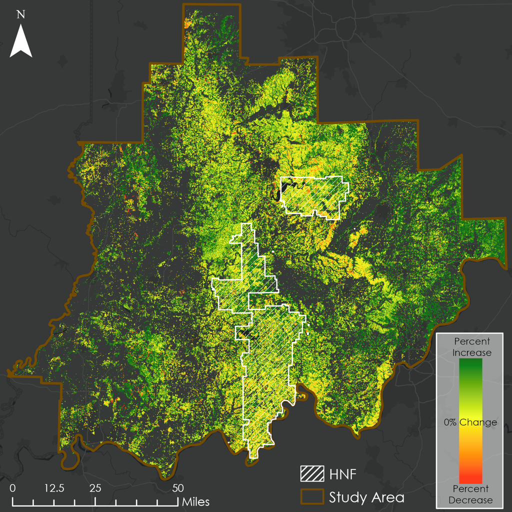
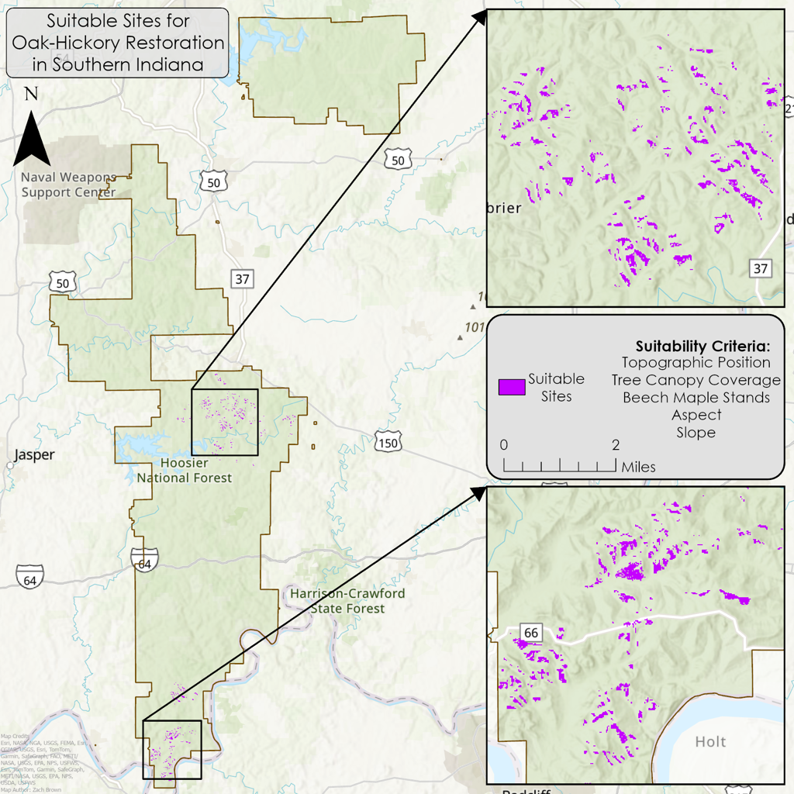

Project
NASA DEVELOP Southern Indiana Ecological Conservation
Abstract
This NASA DEVELOP project assessed canopy cover dynamics and oak-hickory forest restoration suitability across southern Indiana to support ecological conservation and forest management partners. The study focused on oak-hickory forest communities, which have historically declined in dominance due to fire suppression, mesophication, and the encroachment of shade-tolerant mesic species such as beech and maple.
Using NASA Earth observations and ancillary geospatial datasets, the project evaluated long-term forest vegetation dynamics and restoration suitability across a 39-year study period from 1984 to 2023. Landsat 5, 8, and 9 surface reflectance imagery was processed in Google Earth Engine to calculate NDVI and derive Green Vegetation Fraction (GVF) composites. Change detection was then used to map shifts in forest vegetative cover from the earliest composite period to the most recent composite period.
A restoration suitability assessment was also developed using variables relevant to oak-hickory regeneration, including canopy coverage, topographic position, aspect, slope, and species occupancy data where available. Suitability maps were produced for both the full southern Indiana study area and Hoosier National Forest. The final products helped identify areas where restoration practices such as prescribed burning, forest thinning, and targeted management could be prioritized. This project demonstrated the feasibility of using Earth observations to support partner decision-making for oak-hickory forest restoration and mesophication mitigation.
Project Details
Maps and Figures


